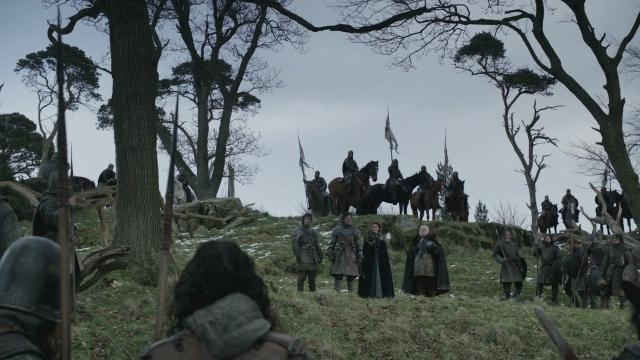

Batalla del Bosque Susurrante
La Batalla del Bosque Susurrante fue una batalla clave durante la Guerra de los Cinco Reyes. Levantó el asedio a Aguasdulces y destrozó uno de los ejércitos Lannister en las Tierras de los Ríos.
El resultado de la batalla fue el completo éxito de la Casa Stark. Jaime perdió diez hombres por cada uno de los hombres caidos de los Stark, y fue capturado junto con Lord Gawen Westerling, Lord Quenten Banefort, Ser Garth Greenfield, Lord Regenard Estren, Ser Tytos Brax, Mallor el Dorniense, Willem Lannister, Cleos Frey y Tion Frey.[4] Pero se perdieron las vidas de Daryn Hornwood, Torrhen y Eddard Karstark.